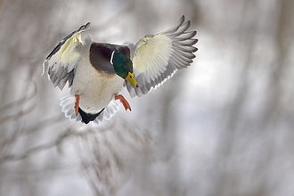

"Duck" is the common name for numerous species of waterfowl in the family Anatidae. Ducks are generally smaller and shorter-necked than swans and geese, which are members of the same family. Divided among several subfamilies, they form a taxon; they do not represent a monophyletic group (the group of all descendants of a single common ancestral species), since swans and geese are not considered ducks. Ducks are mostly aquatic birds, and may be found in both fresh water and sea water.
Ducks are sometimes confused with several types of unrelated water birds with similar forms, such as loons or divers, grebes, gallinules, and coots.
The word duck comes from Old English dūce 'diver', a derivative of the verb *dūcan 'to duck, bend down low as if to get under something, or dive', because of the way many species in the dabbling duck group feed by upending; compare with Dutch duiken and German tauchen 'to dive'.
This word replaced Old English ened/ænid 'duck', possibly to avoid confusion with other words, such as ende 'end' with similar forms. Other Germanic languages still have similar words for duck, for example, Dutch eend, German Ente and Norwegian and. The word ened/ænid was inherited from Proto-Indo-European; cf. Latin anas "duck", Lithuanian ántis 'duck', Ancient Greek νῆσσα/νῆττα (nēssa/nētta) 'duck', and Sanskrit ātí 'water bird', among others.
A duckling is a young duck in downy plumage[1] or baby duck,[2] but in the food trade a young domestic duck which has just reached adult size and bulk and its meat is still fully tender, is sometimes labelled as a duckling.
A male is called a drake and the female is called a duck, or in ornithology a hen.
All ducks belong to the biological order Anseriformes, a group that contains the ducks, geese and swans, as well as the screamers, and the magpie goose.[5] All except the screamers belong to the biological family Anatidae.[5] Within the family, ducks are split into a variety of subfamilies and 'tribes'. The number and composition of these subfamilies and tribes is the cause of considerable disagreement among taxonomists.[5] Some base their decisions on morphological characteristics, others on shared behaviours or genetic studies.[6][7] The number of suggested subfamilies containing ducks ranges from two to five.[8][9] The significant level of hybridisation that occurs among wild ducks complicates efforts to tease apart the relationships between various species.
In most modern classifications, the so-called 'true ducks' belong to the subfamily Anatinae, which is further split into a varying number of tribes.[10] The largest of these, the Anatini, contains the 'dabbling' or 'river' ducks – named for their method of feeding primarily at the surface of fresh water.[11] The 'diving ducks', also named for their primary feeding method, make up the tribe Aythyini.[12] The 'sea ducks' of the tribe Mergini are diving ducks which specialise on fish and shellfish and spend a majority of their lives in saltwater.[13] The tribe Oxyurini contains the 'stifftails', diving ducks notable for their small size and stiff, upright tails.
A number of other species called ducks are not considered to be 'true ducks', and are typically placed in other subfamilies or tribes. The whistling ducks are assigned either to a tribe (Dendrocygnini) in the subfamily Anatinae or the subfamily Anserinae,[15] or to their own subfamily (Dendrocygninae) or family (Dendrocyganidae).[9][16] The freckled duck of Australia is either the sole member of the tribe Stictonettini in the subfamily Anserinae,[15] or in its own family, the Stictonettinae.[9] The shelducks make up the tribe Tadornini in the family Anserinae in some classifications,[15] and their own subfamily, Tadorninae, in others,[17] while the steamer ducks are either placed in the family Anserinae in the tribe Tachyerini[15] or lumped with the shelducks in the tribe Tadorini.[9] The perching ducks make up in the tribe Cairinini in the subfamily Anserinae in some classifications, while that tribe is eliminated in other classifications and its members assigned to the tribe Anatini.[9] The torrent duck is generally included in the subfamily Anserinae in the monotypic tribe Merganettini,[15] but is sometimes included in the tribe Tadornini.[18] The pink-eared duck is sometimes included as a true duck either in the tribe Anatini[15] or the tribe Malacorhynchini,[19] and other times is included with the shelducks in the tribe Tadornini.
The overall body plan of ducks is elongated and broad, and they are also relatively long-necked, albeit not as long-necked as the geese and swans. The body shape of diving ducks varies somewhat from this in being more rounded. The bill is usually broad and contains serrated pectens, which are particularly well defined in the filter-feeding species. In the case of some fishing species the bill is long and strongly serrated.
The scaled legs are strong and well developed, and generally set far back on the body, more so in the highly aquatic species. The wings are very strong and are generally short and pointed, and the flight of ducks requires fast continuous strokes, requiring in turn strong wing muscles. Three species of steamer duck are almost flightless, however. Many species of duck are temporarily flightless while moulting; they seek out protected habitat with good food supplies during this period. This moult typically precedes migration.
The drakes of northern species often have extravagant plumage, but that is moulted in summer to give a more female-like appearance, the "eclipse" plumage. Southern resident species typically show less sexual dimorphism, although there are exceptions such as the paradise shelduck of New Zealand, which is both strikingly sexually dimorphic and in which the female's plumage is brighter than that of the male. The plumage of juvenile birds generally resembles that of the female. Female ducks have evolved to have a corkscrew shaped vagina to prevent rape.
Ducks have a cosmopolitan distribution, and are found on every continent except Antarctica.[5] Several species manage to live on subantarctic islands, including South Georgia and the Auckland Islands.[20] Ducks have reached a number of isolated oceanic islands, including the Hawaiian Islands, Micronesia and the Galápagos Islands, where they are often vagrants and less often residents.[21][22] A handful are endemic to such far-flung islands.
Some duck species, mainly those breeding in the temperate and Arctic Northern Hemisphere, are migratory; those in the tropics are generally not. Some ducks, particularly in Australia where rainfall is erratic, are nomadic, seeking out the temporary lakes and pools that form after localised heavy rain.
Ducks eat food sources such as grasses, aquatic plants, fish, insects, small amphibians, worms, and small molluscs.
Dabbling ducks feed on the surface of water or on land, or as deep as they can reach by up-ending without completely submerging.[24] Along the edge of the bill, there is a comb-like structure called a pecten. This strains the water squirting from the side of the bill and traps any food. The pecten is also used to preen feathers and to hold slippery food items.
Diving ducks and sea ducks forage deep underwater. To be able to submerge more easily, the diving ducks are heavier than dabbling ducks, and therefore have more difficulty taking off to fly.
A few specialized species such as the mergansers are adapted to catch and swallow large fish.
The others have the characteristic wide flat bill adapted to dredging-type jobs such as pulling up waterweed, pulling worms and small molluscs out of mud, searching for insect larvae, and bulk jobs such as dredging out, holding, turning head first, and swallowing a squirming frog. To avoid injury when digging into sediment it has no cere, but the nostrils come out through hard horn.
The Guardian published an article advising that ducks should not be fed with bread because it damages the health of the ducks and pollutes waterways.
Ducks generally only have one partner at a time, although the partnership usually only lasts one year.[26] Larger species and the more sedentary species (like fast-river specialists) tend to have pair-bonds that last numerous years.[27] Most duck species breed once a year, choosing to do so in favourable conditions (spring/summer or wet seasons).
Ducks also tend to make a nest before breeding, and, after hatching, lead their ducklings to water. Mother ducks are very caring and protective of their young, but may abandon some of their ducklings if they are physically stuck in an area they cannot get out of (such as nesting in an enclosed courtyard) or are not prospering due to genetic defects or sickness brought about by hypothermia, starvation, or disease. Ducklings can also be orphaned by inconsistent late hatching where a few eggs hatch after the mother has abandoned the nest and led her ducklings to water.
Female mallard ducks (as well as several other species in the genus Anas, such as the American and Pacific black ducks, spot-billed duck, northern pintail and common teal) make the classic "quack" sound while males make a similar but raspier sound that is sometimes written as "breeeeze",[29][self-published source?] but, despite widespread misconceptions, most species of duck do not "quack".[30] In general, ducks make a range of calls, including whistles, cooing, yodels and grunts. For example, the scaup – which are diving ducks – make a noise like "scaup" (hence their name). Calls may be loud displaying calls or quieter contact calls.
A common urban legend claims that duck quacks do not echo; however, this has been proven to be false. This myth was first debunked by the Acoustics Research Centre at the University of Salford in 2003 as part of the British Association's Festival of Science.[31] It was also debunked in one of the earlier episodes of the popular Discovery Channel television show MythBusters.
Ducks have many predators. Ducklings are particularly vulnerable, since their inability to fly makes them easy prey not only for predatory birds but also for large fish like pike, crocodilians, predatory testudines such as the alligator snapping turtle, and other aquatic hunters, including fish-eating birds such as herons. Ducks' nests are raided by land-based predators, and brooding females may be caught unaware on the nest by mammals, such as foxes, or large birds, such as hawks or owls.
Adult ducks are fast fliers, but may be caught on the water by large aquatic predators including big fish such as the North American muskie and the European pike. In flight, ducks are safe from all but a few predators such as humans and the peregrine falcon, which uses its speed and strength to catch ducks.
Humans have hunted ducks since prehistoric times. Excavations of middens in California dating to 7800 – 6400 BP have turned up bones of ducks, including at least one now-extinct flightless species.[33] Ducks were captured in "significant numbers" by Holocene inhabitants of the lower Ohio River valley, suggesting they took advantage of the seasonal bounty provided by migrating waterfowl.[34] Neolithic hunters in locations as far apart as the Caribbean,[35] Scandinavia,[36] Egypt,[37] Switzerland,[38] and China relied on ducks as a source of protein for some or all of the year.[39] Archeological evidence shows that Māori people in New Zealand hunted the flightless Finsch's duck, possibly to extinction, though rat predation may also have contributed to its fate.[40] A similar end awaited the Chatham duck, a species with reduced flying capabilities which went extinct shortly after its island was colonised by Polynesian settlers.[41] It is probable that duck eggs were gathered by Neolithic hunter-gathers as well, though hard evidence of this is uncommon.
In many areas, wild ducks (including ducks farmed and released into the wild) are hunted for food or sport,[43] by shooting, or formerly by being trapped using duck decoys. Because an idle floating duck or a duck squatting on land cannot react to fly or move quickly, "a sitting duck" has come to mean "an easy target". These ducks may be contaminated by pollutants such as PCBs.
Ducks have many economic uses, being farmed for their meat, eggs, and feathers (particularly their down). Approximately 3 billion ducks are slaughtered each year for meat worldwide.[45] They are also kept and bred by aviculturists and often displayed in zoos.
Almost all the varieties of domestic ducks are descended from the mallard (Anas platyrhynchos), apart from the Muscovy duck (Cairina moschata).[46][47] The Call duck is another example of a domestic duck breed. Its name comes from its original use established by hunters, as a decoy to attract wild mallards from the sky, into traps set for them on the ground. The call duck is the world's smallest domestic duck breed, as it weighs less than 1 kg (2.2 lb).
Ducks appear on several coats of arms, including the coat of arms of Lubāna (Latvia)[50] and the coat of arms of Föglö (Åland).
In 2002, psychologist Richard Wiseman and colleagues at the University of Hertfordshire, UK, finished a year-long LaughLab experiment, concluding that of all animals, ducks attract the most humor and silliness; he said, "If you're going to tell a joke involving an animal, make it a duck."[52] The word "duck" may have become an inherently funny word in many languages, possibly because ducks are seen as silly in their looks or behavior. Of the many ducks in fiction, many are cartoon characters, such as Walt Disney's Donald Duck, and Warner Bros.' Daffy Duck. Howard the Duck started as a comic book character in 1973[53][54] and was made into a movie in 1986.
The 1992 Disney film The Mighty Ducks, starring Emilio Estevez, chose the duck as the mascot for the fictional youth hockey team who are protagonists of the movie, based on the duck being described as a fierce fighter. This led to the duck becoming the nickname and mascot for the eventual National Hockey League professional team of the Anaheim Ducks, who were founded with the name the Mighty Ducks of Anaheim.[citation needed] The duck is also the nickname of the University of Oregon sports teams as well as the Long Island Ducks minor league baseball team.